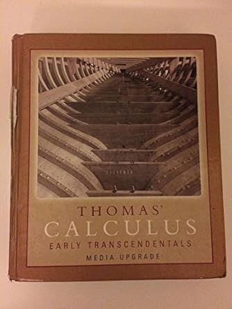
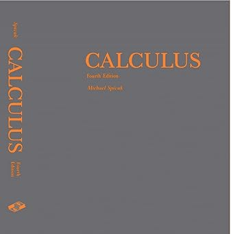
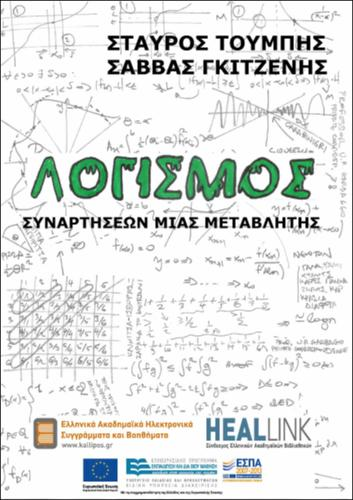
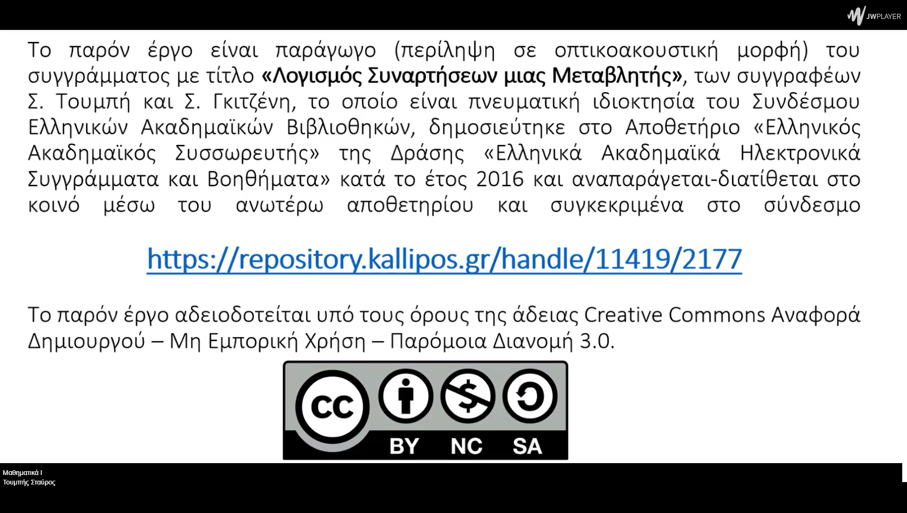

Σειρές
Βιβλιογραφία
Απειροστικός Λογισμός, R. L. Finney, F.R. Giordano, Πανεπιστημιακές Εκδόσεις Κρήτης

Έτος έκδοσης: 2007
Αριθμός Σελίδων: 1384
Αξιολόγηση: (4.2 από 32 αξιολογήσεις)
Το βιβλίο Thomas' Calculus Early Transcendentals Media Upgrade, Έντεκατη Έκδοση, ανταποκρίνεται στις ανάγκες των σύγχρονων αναγνωστών, εστιάζοντας στην ανάπτυξη της εννοιολογικής τους κατανόησης και στην ενίσχυση των δεξιοτήτων τους στην άλγεβρα και την τριγωνομετρία, δύο βασικές γνώσεις για την επιτυχή κατανόηση του διαφορικού και ολοκληρωτικού λογισμού. Το βιβλίο προσφέρει πλήθος ασκήσεων, σαφή και εννοιολογική παρουσίαση, καθώς και ένα νέο πακέτο πολυμέσων ειδικά σχεδιασμένο για τις ανάγκες των σημερινών μαθητών. Οι ασκήσεις αυξάνονται σταδιακά σε δυσκολία, ενθαρρύνοντας τους αναγνώστες να γενικεύουν και να εφαρμόζουν τις έννοιες που μαθαίνουν. Η ενημερωμένη δομή του περιεχομένου εισάγει τις εκθετικές, λογαριθμικές και τριγωνομετρικές συναρτήσεις στο Κεφάλαιο 7. Κύρια Θέματα: Συναρτήσεις, Όρια και Συνέχεια, Παραγώγιση, Εφαρμογές Παραγώγων, Ολοκλήρωση, Εφαρμογές Ορισμένων Ολοκληρωμάτων, Ολοκληρώματα και Υπερβατικές Συναρτήσεις, Τεχνικές Ολοκλήρωσης, Περαιτέρω Εφαρμογές Ολοκλήρωσης, Κωνικές Τομές και Πολικές Συντεταγμένες.
Διαφορικός και Ολοκληρωτικός Λογισμός, M. Spivak, Πανεπιστημιακές Εκδόσεις Κρήτης

Έτος έκδοσης: 2008
Αριθμός Σελίδων: 680
Αξιολόγηση: (4.6 από 167 αξιολογήσεις)
Το διάσημο εγχειρίδιο του Spivak θεωρείται μία από τις καλύτερες εισαγωγές στην μαθηματική ανάλυση. Στόχος του είναι να παρουσιάσει τον διαφορικό και ολοκληρωτικό λογισμό ως την πρώτη πραγματική συνάντηση με τα μαθηματικά: είναι ο χώρος όπου μαθαίνουμε πώς ο λογικός συλλογισμός, σε συνδυασμό με θεμελιώδεις έννοιες, μπορεί να εξελιχθεί σε μία αυστηρή μαθηματική θεωρία και όχι απλώς σε ένα σύνολο εργαλείων και τεχνικών απομνημόνευσης. Δεδομένου ότι η ανάλυση είναι ένα θέμα που οι φοιτητές συνήθως δυσκολεύονται να κατανοήσουν, ο Spivak προσφέρει λεπτομερείς εξηγήσεις, πληθώρα παραδειγμάτων, ευρύ φάσμα ασκήσεων και πολλά διαγράμματα, με έναν φιλικό τρόπο που διαφωτίζει δύσκολες έννοιες και ανταμείβει την προσπάθεια των αναγνωστών. Το Calculus συνεχίζει να θεωρείται κλασικό έργο, ιδανικό για φοιτητές τιμητικών μαθημάτων και σπουδαστές μαθηματικών που αναζητούν μία εναλλακτική επιλογή στα ογκώδη βιβλία του διαφορικού και ολοκληρωτικού λογισμού και στις πιο απαιτητικές εισαγωγές στην πραγματική ανάλυση. Χαρακτηριστικά του Βιβλίου:Ένας από τους πιο διάσημους τίτλους στο είδος του, συνδυάζει αυστηρότητα με φιλικές εξηγήσεις, πληθώρα παραδειγμάτων, ασκήσεων και διαγραμμάτων. Ιδανικό για φοιτητές· προσφέρει σαφείς, διαυγείς εξηγήσεις σχετικά με το τι πραγματικά είναι η ανάλυση και τα μαθηματικά. Πλήρης σειρά ασκήσεων, από τις πιο απλές έως τις πιο απαιτητικές, που εμβαθύνουν την κατανόηση, με διαθέσιμες λύσεις σε βιβλίο μέσω του mathpop.com.
Λογισμός Συναρτήσεων Μιας Μεταβλητής, Σ. Τουμπής, Σ. Γκιτζένης, Εκδόσεις Κάλλιππος

Έτος έκδοσης: 2015
Αριθμός Σελίδων: 350
Αξιολόγηση: (4.4 από 74 αξιολογήσεις)
Το σύγγραμμα προορίζεται για χρήση στη διδασκαλία της βασικής θεωρίας του Λογισμού συναρτήσεων μιας μεταβλητής. Απευθύνεται σε πρωτοετείς φοιτητές Ελληνικών Πανεπιστημίων, και λαμβάνει υπόψιν τις γνώσεις που έχουν αφομοιώσει στο Λύκειο και ιδιαιτέρως κατά την προετοιμασία τους για τις Πανελλήνιες Εξετάσεις. Περιλαμβάνονται κεφάλαια με αντικείμενο τα αξιώματα των αριθμών, τα όρια, τη συνέχεια, την παράγωγο και τις εφαρμογές της, τον ορισμό του ολοκληρώματος και τις βασικές του ιδιότητες και εφαρμογές (σε υπολογισμούς όγκων, μηκών, κ.ο.κ.), τις διαφορικές εξισώσεις, τα πολυώνυμα Taylor, ακολουθίες, σειρές, και κάποια στοιχεία αναλυτικής γεωμετρίας (διανύσματα και κωνικές τομές). Αν και το σύγγραμμα μπορεί σαφώς να χρησιμοποιηθεί σε τμήματα Μαθηματικών, Φυσικής και τμήματα Πολυτεχνικών Σχολών, εντούτοις, λόγω του μεγάλου εύρους της ύλης που καλύπτει, το βιβλίο είναι ιδανικό για διδασκαλία σε τμήματα τα οποία περιλαμβάνουν ένα σχετικά μικρό αριθμό μαθημάτων μαθηματικού υποβάθρου, και αφιερώνουν περίπου 1 μάθημα σε Λογισμό Μίας Μεταβλητής και συναφή θέματα. Υπάρχουν δεκάδες τέτοια τμήματα στην επικράτεια, π.χ. ΑΕΙ Πληροφορικής, Βιολογίας, Χημείας, Οικονομικής Επιστήμης, κ.ο.κ., καθώς και ΤΕΙ τεχνολογικής κατεύθυνσης. Οι βασικοί στόχοι του βιβλίου είναι: Οι φοιτητές να εμβαθύνουν στην ύλη που ήδη ξέρουν από το Λύκειο, δηλαδή τις βασικές έννοιες των παραγώγων και των ολοκληρωμάτων. Οι φοιτητές να μάθουν ορισμένα νέα κομμάτια θεωρίας (π.χ. συνέχεια Lipschitz) και νέες εφαρμογές των ήδη γνωστών τους εννοιών (π.χ. υπολογισμοί διάφορων όγκων). Οι φοιτητές να έρθουν σε επαφή με γνωστικά αντικειμενα όπως τα πολυώνυμα Taylor και διάφοροι αριθμητικές μέθοδοι (Μεθόδους Newton, Euler, κ.ο.κ.), τα οποία αποτελούν βασικά εργαλεία άλλων μαθημάτων στη συνέχεια των σπουδών τους. Η ύλη να παρουσιάζεται κατά το δυνατόν αυστηρά ώστε να ενισχυθεί η ικανότητα των φοιτητών για δομημένη σκέψη. Ταυτόχρονα παρέχεται μεγάλο πλήθος ασκήσεων και παραδειγμάτων για καλύτερη κατανόηση.
Βιντεοσκοπημένες Διαλέξεις
Διάλεξη 12.1: Ορισμός και παραδείγματα

Δημιουργός: Τουμπής Σταύρος
Διάρκεια: 00:37:31
Αξιολόγηση: (5 από 48 αξιολογήσεις)
Περιγραφή: Σε αυτή τη διάλεξη γίνεται εισαγωγή στον ορισμό των αριθμητικών σειρών. Εξετάζονται βασικές έννοιες, όπως τα αθροίσματα και η σύγκλιση, και παρουσιάζονται χαρακτηριστικά παραδείγματα σειρών που βοηθούν στην κατανόηση των θεμελιωδών εννοιών.
Διάλεξη 12.2: Βασικές ιδιότητες σειρών
Δημιουργός: Τουμπής Σταύρος
Διάρκεια: 00:41:04
Αξιολόγηση: (5 από 37 αξιολογήσεις)
Περιγραφή: Η διάλεξη επικεντρώνεται στις κύριες ιδιότητες των σειρών, όπως η γραμμικότητα, η μετατόπιση όρων, και η σύγκλιση. Αναλύονται κανόνες και θεωρήματα που διευκολύνουν τους υπολογισμούς και τη μελέτη των σειρών στην ανάλυση.
Διάλεξη 12.3: Σειρές μη αρνητικών όρων
Δημιουργός: Τουμπής Σταύρος
Διάρκεια: 01:25:03
Αξιολόγηση: (4.8 από 56 αξιολογήσεις)
Περιγραφή: Αυτή η διάλεξη εξετάζει ειδικά τις σειρές με μη αρνητικούς όρους. Παρουσιάζονται κριτήρια σύγκλισης, όπως το κριτήριο σύγκρισης και το κριτήριο της ρίζας, τα οποία είναι ιδιαίτερα χρήσιμα για την κατανόηση της σύγκλισης σειρών αυτής της κατηγορίας.